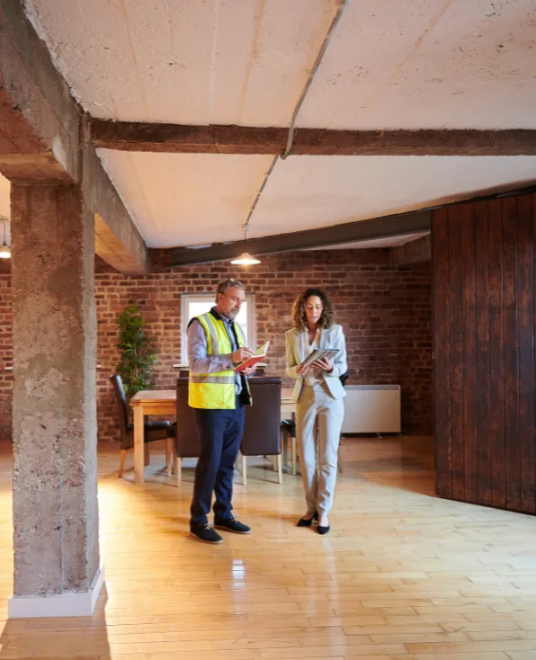

Rough clean
Clears the way after the heavy trades so finish work can start on a clean site.
- Debris and scrap removal
- Packaging and material waste hauled out
- Floors swept and work areas cleared

Rough, final and touch-up cleans scheduled around your punch list, so the space is ready for inspection, turnover or move-in.
These are the industry-standard phases. If your job needs something different, ask for a custom scope.
Clears the way after the heavy trades so finish work can start on a clean site.
The detailed clean that gets a space ready for the owner, tenant or inspector.
A last pass for the dust and fingerprints that settle after the final clean.
General contractors and developers hand us the punch list and the date. Property managers call us between tenants. Homeowners call after a renovation.
Whoever you are, you get one point of contact, a written scope that says what each phase includes, and a crew that works around trades still on site.
Share your inspection, turnover or move-in date and the size of the space.
We confirm which phases you need and send an itemized price.
We clean to the scope and walk it with you before turnover.
If your question isn't here, call or text and you'll get a straight answer.
All three standard phases: rough clean during construction, final clean before turnover and touch-up clean before move-in or inspection. You can book one phase or all three.
Yes. If your job needs something outside the standard phases, tell us what it is and we'll scope and price it.
Give us your inspection, turnover or move-in date and we schedule each phase back from it.
Yes. Homeowners use our final and touch-up cleans after kitchen, bath and whole-house renovations.
 Procurement
Procurement